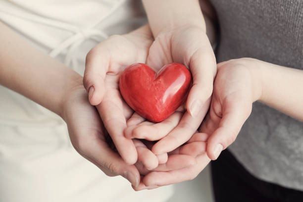

Zakat-fund
The UN estimates that there are 150 million children living on the street. This is perhaps a conservative estimate, as reporting and recording is very difficult, and the real figure is thought to be much higher. They are living in fear, without protection, food or hope for their futures. They are at huge risk of exploitation, abuse, forced prostitution, trafficking, forced labour and slavery.As one of the major charities for street children, we support street children in Bangladesh and Pakistan.
Donate for zakat
Zakat-fund
155 million children around the world go hungry every single day, and thousands tragically lose their lives due to malnutrition. These figures are devastating, and shocking as a reality in 2022. A lack of food is a key reason why so many children from impoverished communities are not in school. Many families would rather their children work to support the family. Those children who do go to school often have no breakfast at home, and no food with them for lunch at school.
Donate for zakat
Zakat-fund
According to ReliefWeb, the North Gaza Seawater Desalination Plant has had to stop operations due to the risk to workers and a damaged supply line, affecting 250,000 people.The main electricity feeder to the region has also been damaged, affecting 65% of Gaza’s water and sanitation facilities.Gaza needs regular safe and clean water supplies urgently not only for the domestic needs of families but to run the health facilities too. Please donate generously.Thank you
Donate for zakat